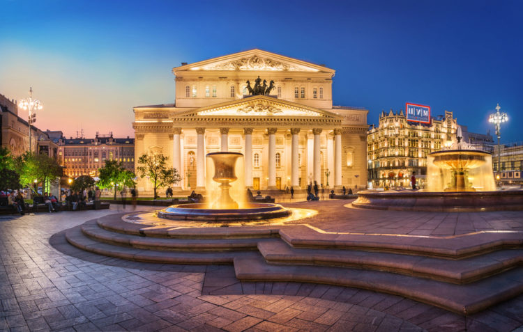

10. Большой театр (Москва)

Здание Большого театра легко узнается и заядлыми театралами, и людьми, весьма далекими от всего, что относится к искусству. Кажется, что четверка коней, украшающая грандиозное архитектурное сооружение, сейчас взмоет вверх. Считается, что история этого храма Мельпомены началась в 1776, когда князь Урусов получил разрешение от императрицы Екатерины II на открытие публичного театра в Москве. Но здание, которое построил Урусов, сгорело до открытия, и он решил продать предприятие англичанину Майклу Мэддоксу, математику из Оксфорда, приглашенному в Россию для обучения наукам цесаревича Павла Романова. И 30 декабря 1780 года театр был торжественно открыт. В нем был построен зал на 1000 мест, просторная сцена и большая оркестровая яма. Первой прима-балериной Большого стала француженка Фелицата Гюллень-Сор. В 1918 году Ленин требовал, чтобы Большой театр немедленно снесли. Он утверждал, что опера – буржуазное искусство, требующее огромных трат и не приносящее пользы. Удивительно, но именно Сталин изменил мнение Ленина. В 1940 году советское правительство провело конкурс по приданию театру «советского рабочего стиля». Однако, в 2011 году Большой отреставрировали, придав ему первоначальный исторический вид и улучшив акустику.